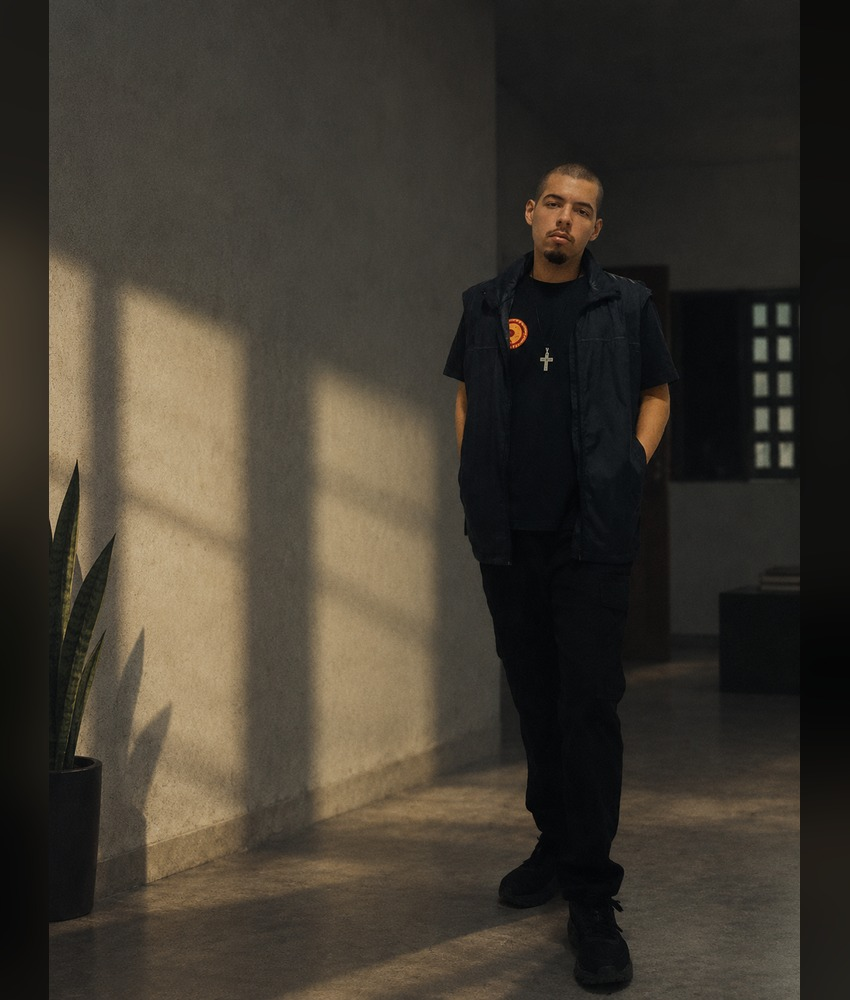

SOBRE ESTE ESPAÇO
Um pouco de tudo,
sem muita cerimônia.
Um canto próprio para guardar, experimentar e publicar coisas.
04 / 202601 / QUEM SOU, AFINAL?
Ismael.
Passei pela Ciência de Dados e Inteligência Artificial na UFPB, em João Pessoa, onde ajudei a fundar o centro acadêmico do curso e participei da coordenação regional do DCE organizado no movimento Correnteza e União da Juventude Rebelião (UJR).
Sou aprovado no concurso do CBMCE, programador, desenvolvedor de jogos, evangélico e comunista (marxista-leninista). Gosto de tecnologia, política, jogos, direito e de pensar sobre como as coisas funcionam ou como deveriam funcionar.
Fora isso, sou só alguém tentando fazer algumas coisas interessantes e descobrir outras pelo caminho.

ISMAEL ARAÚJO / 202602 / EM CONSTRUÇÃO
Sem saber muito bem no que vai dar.
A ideia deste site não é construir uma marca pessoal, montar um portfólio impecável ou fingir que tenho tudo organizado. É ter um lugar meu na internet, sem depender inteiramente dos formatos e das regras das plataformas.
A estrutura pode mudar, projetos podem ficar pela metade, ideias podem ser abandonadas e outras podem aparecer do nada. Não tem problema. O site também faz parte da experiência.
03 / O QUE VAI APARECER POR AQUI
O que der vontade de colocar no mundo.
Projetos, experiências com tecnologia, coisas relacionadas ao CBMCE, textos políticos, opiniões, experimentos e talvez assuntos que não tenham muito a ver uns com os outros.
Tenho minhas posições e elas aparecem no que faço e escrevo. Não pretendo fingir neutralidade, mas também não quero transformar cada publicação numa declaração definitiva sobre quem sou ou sobre o que penso.
É um espaço pessoal. Algumas coisas vão fazer sentido, outras talvez não. A ideia é justamente poder experimentar.